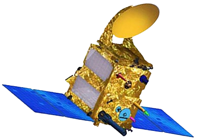

Microsat Series
Compact spacecraft supporting Earth imaging and technology demonstration missions.
COMPACT SPACECRAFT / 06
Agile and focused space platforms designed for imaging, science and technology missions.

Small satellites enable focused Earth observation, science and technology missions while offering compact spacecraft architectures and flexible development approaches.
02 / EXAMPLES
Compact spacecraft supporting Earth imaging and technology demonstration missions.
Small spacecraft platforms developed for focused science and technology experiments.
Small Satellite Launch Vehicle missions designed around compact satellite deployment.
Compact missions can focus on specific scientific or imaging objectives.
Smaller spacecraft can support focused mission architectures.
Small satellite missions provide opportunities for technology demonstrations and experiments.